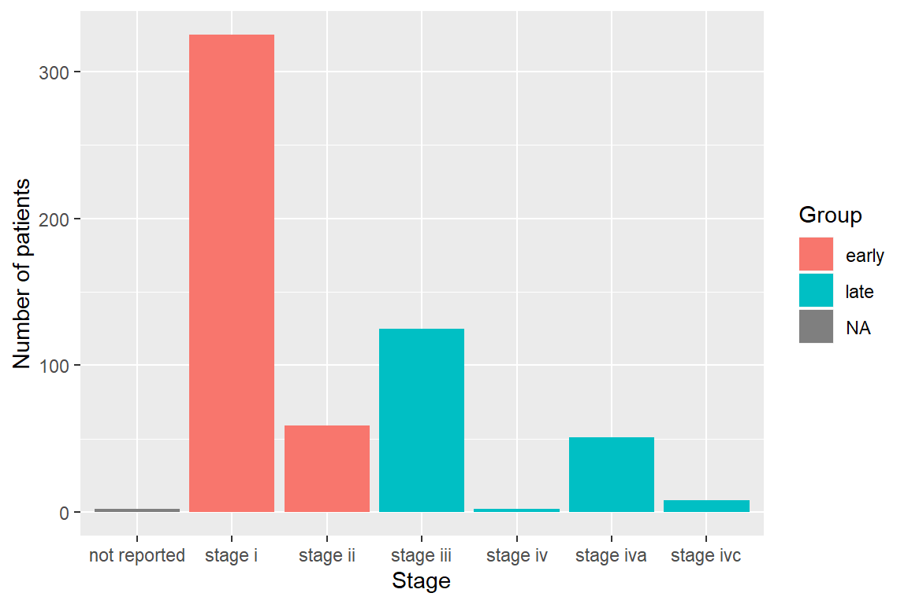
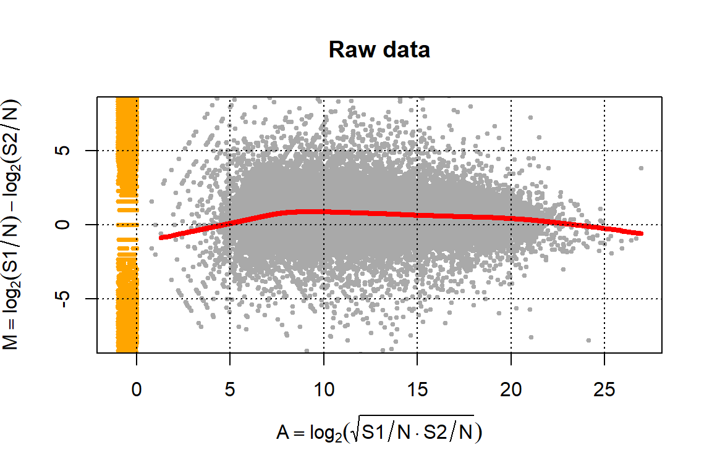
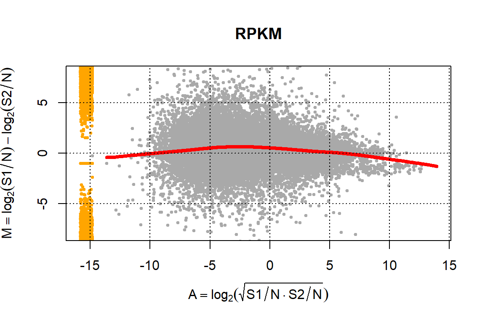
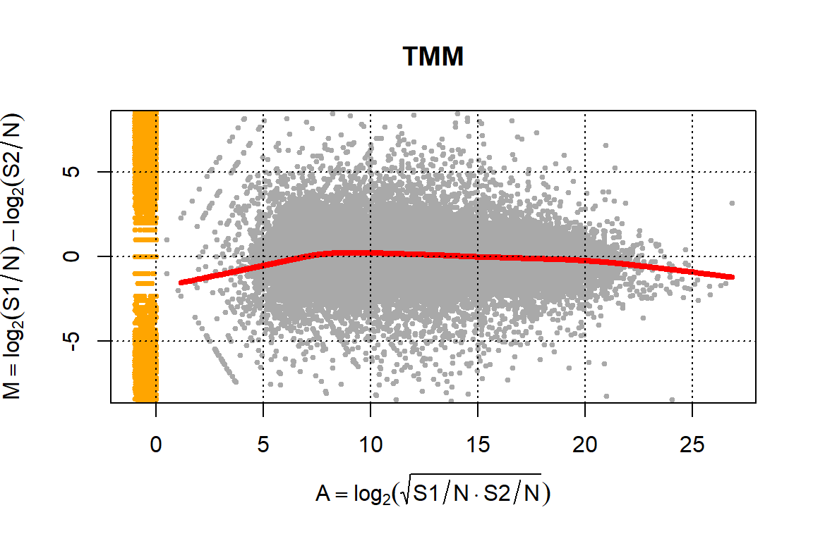
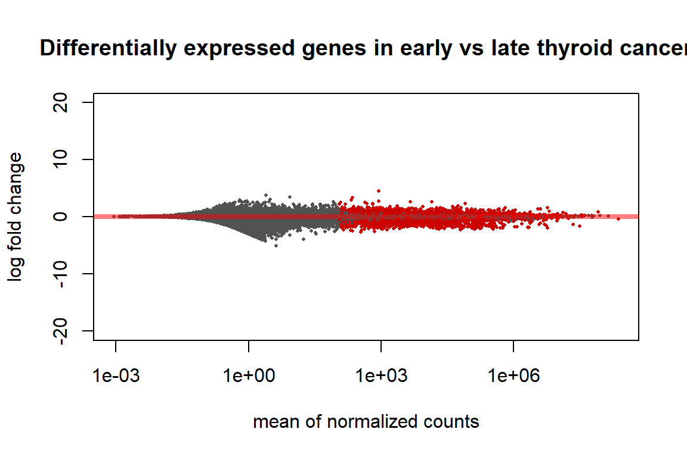
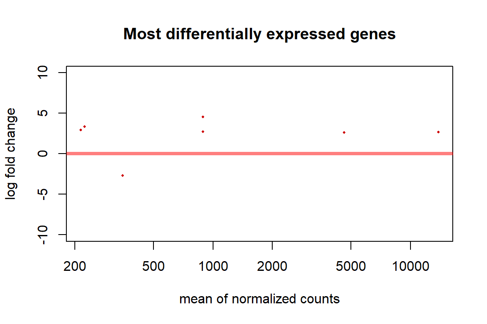
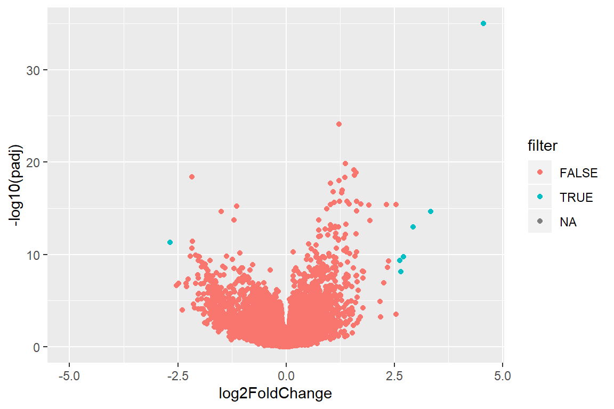
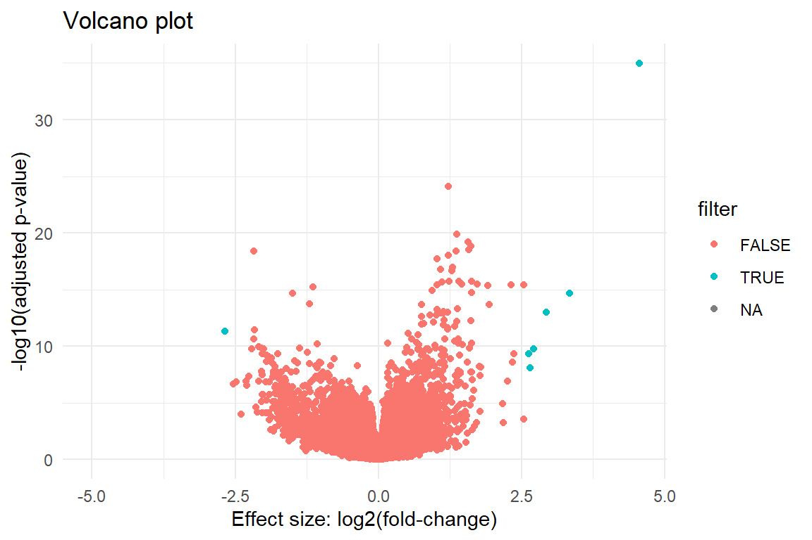
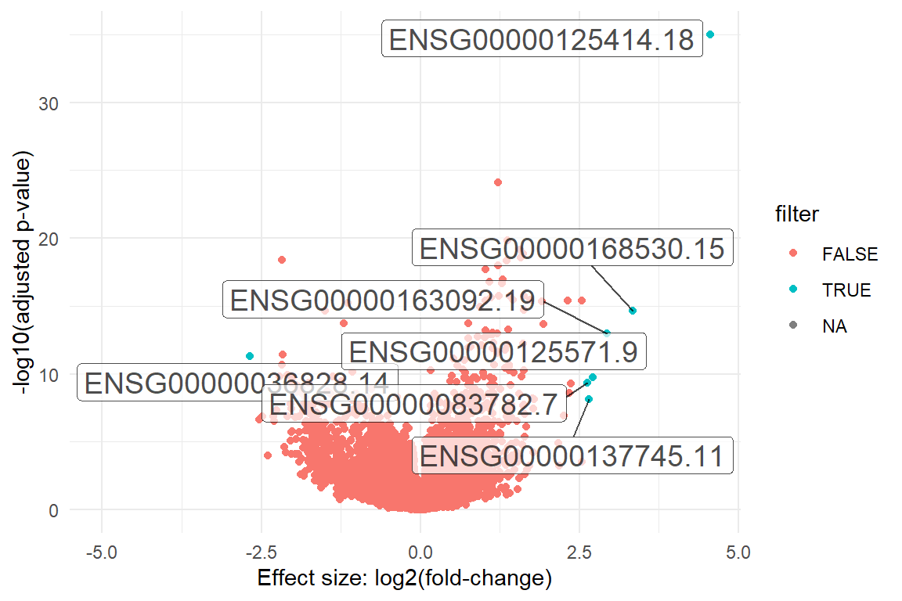

P4 | Solving real cases in genomics
Finding differentiantly expressed genes in thyroid cancer
Current Topics in Bioinformatics
4 December 2019
1. Introduction
RNA-seq is a recent approach to carry out expression profiling using high-throughput sequencing (HTS) technologies. Pre-2008, microarrays were predominantly used, but because the sequencing costs have decreased, RNA-seq became the preferred option to simultaneously measure the expression of tens of thousands of genes for multiple samples.
In this tutorial we walk through a gene-level RNA-seq differential expression analysis using Bioconductor packages to find genes over- or under-expressed in cancer patients.
1.1 Experimental data
The Cancer Genome Atlas (TCGA) is a collaboration between the National Cancer Institute (NCI) and the National Human Genome Research Institute (NHGRI) that has generated comprehensive, multi-dimensional maps of the key genomic changes in 33 types of cancer. The TCGA dataset, comprising more than two petabytes of genomic data, has been made publically available, and this genomic information helps the cancer research community to improve the prevention, diagnosis, and treatment of cancer.
Recount is an online resource consisting of RNA-seq gene and exon counts for different studies, including TCGA data. From there, we can download the RNA-seq data of different cancer types that we will use in this practical:
| Cancer | Download |
|---|---|
| Brain | Link |
| Breast | Link |
| Cervix | Link |
| Colorectal | Link |
| Prostate | Link |
| Ovary | Link |
| Uterus | Link |
| Thyroid | Link |
| Skin | Link |
| Esophagus | Link |
The practical concist on a worked example using data from pleural cancer. Each group must select a cancer type from the table to perform their own differential expression analysis.
P4 Learning outcomes
- Data manipulation (P1)
- Descriptive analysis of the data (P1)
- Methods to normalize RNA-seq data
- Perform statistical tests to find which genes are differentially expressed in different human cancers
- Enrichment analysis
- Visualize the results (P2)
1.2 Practicals organization
In this practical, we are going to use the RStudio integrated development environment (IDE) for R. R is a programming language for statistical computing and graphics.
You will see different icons through the document, the meaning of which is:
: additional or useful information
: a worked example
: a practical exercise
: a space to answer the exercise
: a hint to solve an exercise
: a more challenging exercise
2. Tools installation
Follow P2.Rmd instructions if you need to install R and/or RStudio for either Windows or Linux.
2.1 Required R packages
Bioconductor has many packages supporting analysis of high-throughput sequence data, including RNA-seq. The packages that we will use in this tutorial include core packages maintained by the Bioconductor core team for importing and processing raw sequencing data and loading gene annotations.
install.packages("ggplot2")
install.packages("BiocManager")
BiocManager::install(c("SummarizedExperiment", "DESeq2", "org.Hs.eg.db", "biomaRt", "edgeR", "tweeDEseq", "GOstats"))Conducting an RNA-seq analysis
With this worked example, we are going to illustrate how to perform an RNA-seq expression analysis on RNA-seq data from patients diagnosed with mesothelioma (pleural cancer). The goal is to compare the transcriptomic profile of patients in an early tumoral stage with ones in an advanced stage of this disease. The objective is to find differential expressed in this type of cancer.
The data is available in a Ranged Summarized Experiment (RSE) format. It is a matrix-like container where rows represent ranges of interest and columns represent samples (with sample data summarized as a data.frame).
1. Prepare data
Create a working directory named Project4 and create a folder named data and inside, pleuralCancer folder.
# bash code to create directories
mkdir Project4
cd Project4
mkdir data
cd data
mkdir thyroidCancer
cd thyroidCancer Navigate to the pleuralCancer folder and download the RSE data for pleura cancer .
This time you can use the wget function in the Linux terminal to download the file!
# bash code to download and uncompress the data
# wget http://duffel.rail.bio/recount/v2/TCGA/rse_gene_thyroid.Rdata RSE data can be loaded into R with the load() function.
Remember to change the working directory to properly load the data if it’s necessary:
# wget() to know the current working directory
# setwd("~/Descargas/Project4") will change the current directory to the Project4 folder inside the Descargas folder
getwd()## [1] "C:/Users/Judit/Desktop/TAB FINAL/P4/tiroides"setwd("C:/Users/Judit/Desktop/TAB FINAL/P4/Project4")
# Read RSE data of the cancer experiment
load(file = "data/thyroidCancer/rse_gene_thyroid.Rdata")An object called rse_gene will be in your R environment.
Exploring the data using the dim() function, we see that there are 58037 genes (number of rows) analyzed in a cohort of 572 patients with cancer (number of columns).
The variable gdc_cases.diagnoses.tumor_stage which is inside the rse_gene object contains information of the tumoral stage (i.e.: not reported, stage i, stage ii, stage iii, stage iv, stage iva, stage ivc). We can use this information to create a new variable in the rse_gene object called GROUP distinguishing “early” and “late” tumours. Early tumours are those in stages i and ii, while late tumours those in stages iii and iv.
The following code will add an additional column GROUP to the meta-data to organize the cancer stages:
stage <- rse_gene$gdc_cases.diagnoses.tumor_stage
# id list of early tumours
ids.early <-grep(paste("stage i$", "stage ia$","stage ib$","stage ic$", "stage ii$", "stage iia$","stage iib$", "stage iic$",sep="|"), stage)
# id list of late tumours
ids.late <-grep(paste("stage iii$", "stage iiia$", "stage iiib$","stage iiic$", "stage iv$", "stage iva$","stage ivb$", "stage ivc$",sep="|"), stage)
# create an empty column named GROUP
colData(rse_gene)$GROUP <-rep(NA, ncol(rse_gene))
# add early for those patients with tumours at stages i-ii
colData(rse_gene)$GROUP[ids.early] <- "early"
# add late for those patients with tumours at stages iii-iv
colData(rse_gene)$GROUP[ids.late] <- "late"
Can you reproduce the previous figure using the following data.frame()?
# create dataframe
dataGroups <- data.frame(Stage = rse_gene$gdc_cases.diagnoses.tumor_stage, Group = rse_gene$GROUP)
# ggplot2 plot
ggplot(data = dataGroups, mapping = aes(x = Stage, fill = Group )) + labs(x = "Stage", y = "Number of patients") +
geom_bar()
It is important to remove all patients whose stage of the cancer was not recorded. We can check if it’s necessary in the pleura thyroid dataset using the table() function:
# Check if the status is NA
naData <- is.na(rse_gene$GROUP)
table(naData)## naData
## FALSE TRUE
## 570 2As we can see, all patients have information because all the results are FALSE when we check if something “is na?”. But if we are dealing with some TRUE results (i.e., there’s no data for some patients) –> it’s the case for thyroid cancer (true = 2), we can remove it as:
# After removing
dim(rse_gene)## [1] 58037 572# Remove NA
rse_gene <- rse_gene[, !naData]
dim(rse_gene)## [1] 58037 570We can summarize individuals in each category as “early” and “late” using the table() function. We can see that there are more than two times patients in the late stage than in the early stage. –> contrary to thyroid cancer = two times more early stage than late stage
# summary of the patients
table(rse_gene$GROUP)##
## early late
## 384 186After exploring a bit the data, we can now get the read counts data. It can be retrieved using the assay() function.
# save the count data
counts <- assay(rse_gene, "counts")
counts[1:5, 1:2]## E2E857AB-E18D-41F8-8090-14CD0956D472
## ENSG00000000003.14 253114
## ENSG00000000005.5 288
## ENSG00000000419.12 165189
## ENSG00000000457.13 110598
## ENSG00000000460.16 59325
## 3BE08ABD-953D-4440-BF17-AA654E6381B7
## ENSG00000000003.14 435480
## ENSG00000000005.5 240
## ENSG00000000419.12 274419
## ENSG00000000457.13 167195
## ENSG00000000460.16 84108The data related to the phenotype of the patients can also be retrieved using the colData() function:
# save the phenotype data
phenotype <- colData(rse_gene)
phenotype[1:5, 1:2]## DataFrame with 5 rows and 2 columns
## project sample
## <character> <logical>
## E2E857AB-E18D-41F8-8090-14CD0956D472 TCGA NA
## 3BE08ABD-953D-4440-BF17-AA654E6381B7 TCGA NA
## 0DBC5E6B-7BBA-4083-9F99-2BC19D75F4E1 TCGA NA
## 10AD6BD1-FDB7-4C49-821E-C03B946FF92D TCGA NA
## 8709CFA2-0F90-4A18-B5EF-56D1D60A7947 TCGA NAWe need to check that the same individuals are found both in the counts dataset and in the phenotype dataset.
# check if the same individuals are found in the datasets
identical(colnames(counts), rownames(phenotype))## [1] TRUEBecause the result is TRUE, it means that we have the same individuals in both datasets. If the result were FALSE, we would need to only keep those individuals in common in both datasets. For that, we can use the intersect function.
# save a vector with the id of the individuals in common in both datasets
individualsCommon <- intersect(colnames(counts),rownames(phenotype))
# filter the count dataset to keep only the individuals in the vector
counts <- counts[, individualsCommon]
# filter the phenotype dataset to keep only the individuals in the vector
phenotype <- phenotype[individualsCommon ,]In this case, we still have the 570 individuals.
Finally, the gene information can be retrived using the rowData() function:
# save the annotation data
annotation <- rowData(rse_gene)
annotation## DataFrame with 58037 rows and 3 columns
## gene_id bp_length symbol
## <character> <integer> <CharacterList>
## ENSG00000000003.14 ENSG00000000003.14 4535 TSPAN6
## ENSG00000000005.5 ENSG00000000005.5 1610 TNMD
## ENSG00000000419.12 ENSG00000000419.12 1207 DPM1
## ENSG00000000457.13 ENSG00000000457.13 6883 SCYL3
## ENSG00000000460.16 ENSG00000000460.16 5967 C1orf112
## ... ... ... ...
## ENSG00000283695.1 ENSG00000283695.1 61 NA
## ENSG00000283696.1 ENSG00000283696.1 997 NA
## ENSG00000283697.1 ENSG00000283697.1 1184 HSFX3
## ENSG00000283698.1 ENSG00000283698.1 940 NA
## ENSG00000283699.1 ENSG00000283699.1 60 MIR4481We have information for a total of 58037 genes.
Can you explore which information is available for each gene?
Answer:
To visualize the information we write head(annotation) at the console and see the results as a table. We can see 3 columns:
gene_id, the ensembl gene id on NSG format
bp_length, the gene length in bp
symbol, the common name of the gene
Write a short summary of the information you have available (e.g., total number of individuals, filtered individuals, individuals by stage, number of genes, …)
Answer:
Total number of individuals: 572
Filtered individuals: 570. We filtered out two individuals because they didn’t have enough information.
Individuals by stage: 384 early stage, 186 in the late stage. So we have almost double the individuals in the early stafe than in the late stage.
Number of genes: 58037 annotated genes related with cancer in total.
2. Normalization
Why is it necessary to normalize RNA-seq data?
- The number of counts is related to sequencing depth
Accounting for sequencing depth is necessary for comparison of gene expression between samples. In the example below, each gene appears to have doubled in expression in Sample A relative to Sample B, however this is a consequence of Sample A having double the sequencing depth.

- The number of counts is related to transcript length
Accounting for gene length is necessary for comparing expression between different genes within the same sample. In the example, Gene X and Gene Y have similar levels of expression, but the number of reads mapped to Gene X would be many more than the number mapped to Gene Y because Gene X is longer.

- The number of counts is proportional to the mRNA expression level
A few highly differentially expressed genes between samples, differences in the number of genes expressed between samples, or presence of contamination can skew some types of normalization methods. Accounting for RNA composition is recommended for accurate comparison of expression between samples, and is particularly important when performing differential expression analyses.

Information retrieved from Introduction to DGE.
The aim of normalization is to remove systematic technical effects that occur in the data to ensure that technical bias has minimal impact on the results (Robinson and Oshlack, 2010).
There are different methods to normalize the counts (for a review see Evans et al., 2017). We are going to focus in two types:
- RPKM (Mortazavi et al., 2008) – Reads Per Kilobase Million. This method corrects for the sequencing depth and the gene length. It’s a non-sophisticated normalization method. Counts are divided by the transcript length (kb) times the total number of millions of mapped reads:
\[ RPKM = \frac{\frac{number\;of\;reads\;in\;region}{region\;length\times10^3}}{total\;reads\times10^6}\]
- TMM (Robinson and Oshlack, 2010) – Trimmed Mean of M values. This method was developed to address this issue: The proportion of reads attributed to a given gene in a library depends on the expression properties of the whole sample rather than just the expression level of that gene. Therefore, the method accounts for sequencing depth, RNA composition, and gene length.
Both methods allows comparisons between genes within a sample, but only TMM is recommended for between sample comparisons and differential expression analyses.
The MA-plots are used to check whether normalization is needed or not. There is a function in the edgeR package designed to create such a plot, the maPlot() function:
maPlot(counts[,1],
counts[,2],
pch=19,
cex=.5,
ylim=c(-8,8),
allCol="darkgray",
lowess=TRUE,
xlab=expression(A == log[2] (sqrt(S1/N %.% S2/N))),
ylab=expression(M == log[2](S1/N)-log[2](S2/N)))
grid(col="black")
title("Raw data")
This plot represents the log-fold change (M-values, i.e. the log of the ratio of level counts for each gene between two samples) against the log-average (A-values, i.e. the average level counts for each gene across the two samples). From a MA-plot one can see if normalization is needed or not.
One expects that the vast majority of genes are not differentially expressed between individual, thus having a symmetrical distribution on the plot with most of the genes at the 0 (y = 0). A lowess fit (red line) is plotted underlying a possible trend in the bias related to the mean expression.
2.1 RPKM normalization
We can normalize read counts using the RPKM normalization simply applying the previous formula.
# length of the gene
geneLength <- annotation$bp_length
# RPKM normalization method
counts.rpkm <- t(t(counts/geneLength*1000)/colSums(counts)*1e6)
counts.rpkm[1:5,1:2]## E2E857AB-E18D-41F8-8090-14CD0956D472
## ENSG00000000003.14 7.95976982
## ENSG00000000005.5 0.02551104
## ENSG00000000419.12 19.51800781
## ENSG00000000457.13 2.29155950
## ENSG00000000460.16 1.41789262
## 3BE08ABD-953D-4440-BF17-AA654E6381B7
## ENSG00000000003.14 11.57441241
## ENSG00000000005.5 0.01796774
## ENSG00000000419.12 27.40406174
## ENSG00000000457.13 2.92788184
## ENSG00000000460.16 1.69898404maPlot(counts.rpkm[,1],
counts.rpkm[,2],
pch=19,
cex=.5,
ylim=c(-8,8),
allCol="darkgray",
lowess=TRUE,
xlab=expression( A==log[2] (sqrt(S1/N%.%S2/N))),
ylab=expression(M==log[2](S1/N)-log[2](S2/N)))
grid(col="black")
title("RPKM")
2.2 TMM normalization
TMM normalization method is implemented in the tweeDEseq Bioconductor package, inside the normalizeCounts() function.
# TMM normalization method
counts.tmm <- normalizeCounts(counts, method = "TMM")## Using edgeR-TMM normalization.## Calculating normalization factors with the TMM method.## Estimating common dispersion.## Estimating tagwise dispersions.## Calculating effective library sizes.## Adjusting counts to effective library sizes using tagwise dispersions.counts.tmm[1:5,1:2]## E2E857AB-E18D-41F8-8090-14CD0956D472
## ENSG00000000003.14 296828
## ENSG00000000005.5 338
## ENSG00000000419.12 193718
## ENSG00000000457.13 129699
## ENSG00000000460.16 69570
## 3BE08ABD-953D-4440-BF17-AA654E6381B7
## ENSG00000000003.14 323942
## ENSG00000000005.5 178
## ENSG00000000419.12 204134
## ENSG00000000457.13 124372
## ENSG00000000460.16 62566maPlot(counts.tmm[,1],
counts.tmm[,2],
pch=19, cex=.5,
ylim=c(-8,8),
allCol="darkgray",
lowess=TRUE,
xlab=expression( A==log[2] (sqrt(S1/N%.%S2/N))),
ylab=expression(M==log[2](S1/N)-log[2](S2/N)))
grid(col="black")
title("TMM")
Discuss with a colleague the following:
- Do you observe any improvement when comparing the Raw data against the RPKM normalization?
- And when comparing the Raw data and the TMM method?
- Which is the best normalization method in this case?

Answer:
We can’t observe any improvement. If we compare the raw data with RPKM we can see that the normalization hasn’t helped, it has made it worse. The red line is even further away from 0 in the RPKM plot. This might be because this method isn’t recommended when analyzing different samples.
Comparing the raw data with the TMM method we can see an improvement, the red line is now more accurately over the the y = 0 line, because it normalizes both in the sample and between samples. We can see some noise in both ends of the line, and that could be improved but we haven’t done those steps.
In this case, the TMM method would be better to normalize the data, even if it is not perfect
3. Differential expression analysis
The R package DESeq2 allows researchers to test differential gene expression analysis based on the negative binomial distribution (Love, et al., 2014).
The starting point of a DESeq2 analysis is a count matrix with one row for each gene and one column for each sample. The data is unnormalized reads count, because this package has its own normalization method.
This function requires the SummarizedExperiment object and the design, which in this case is given in the variable GROUP because we want to compare early vs. late tumor stages.
# stage of each patient
pheno.stage <- subset(phenotype, select=GROUP)
# recreate the counts in a new matrix
counts.adj <- matrix((as.vector(as.integer(counts))), nrow=nrow(counts), ncol=ncol(counts))
rownames(counts.adj) = rownames(counts)
colnames(counts.adj) = colnames(counts)
# check information
identical(colnames(counts.adj), rownames(pheno.stage))## [1] TRUE# transform the group variable to factor
pheno.stage$GROUP <- as.factor(pheno.stage$GROUP)
# create the DESeqDataSet input
DEs <- DESeqDataSetFromMatrix(countData = counts.adj,
colData = pheno.stage,
design = ~ GROUP)
# differential expression analysis
dds <- DESeq(DEs)## estimating size factors## estimating dispersions## gene-wise dispersion estimates## mean-dispersion relationship## final dispersion estimates## fitting model and testing## -- replacing outliers and refitting for 14783 genes
## -- DESeq argument 'minReplicatesForReplace' = 7
## -- original counts are preserved in counts(dds)## estimating dispersions## fitting model and testing# results extracts a result table from a DESEq analysis
res <- results(dds, pAdjustMethod = "fdr")
head(res)## log2 fold change (MLE): GROUP late vs early
## Wald test p-value: GROUP late vs early
## DataFrame with 6 rows and 6 columns
## baseMean log2FoldChange lfcSE
## <numeric> <numeric> <numeric>
## ENSG00000000003.14 360329.147324259 -0.0227770954361432 0.0369738431826037
## ENSG00000000005.5 356.636642597194 0.836632724574988 0.230185699964791
## ENSG00000000419.12 171908.507184791 0.00653444097484428 0.0257394413255527
## ENSG00000000457.13 127260.687212182 0.0338018098241031 0.0244303136613293
## ENSG00000000460.16 60130.5027120088 0.105835117827293 0.0239738789313073
## ENSG00000000938.12 67113.8372719459 0.0206206448915856 0.0904818136531188
## stat pvalue padj
## <numeric> <numeric> <numeric>
## ENSG00000000003.14 -0.616032672710092 0.537872956107162 0.69622186984255
## ENSG00000000005.5 3.63459904200373 0.000278413289085263 0.00333245397139325
## ENSG00000000419.12 0.253868795837353 0.799596922496064 0.880555486603879
## ENSG00000000457.13 1.3836011396615 0.166480619174694 0.325448475071407
## ENSG00000000460.16 4.41460133049576 1.01196307277987e-05 0.000280312976216526
## ENSG00000000938.12 0.227898226826434 0.819725361242631 0.894066059020652The plotMA function allows the graphical representation of the log2 fold-change over the mean of normalized counts for all the samples in the DESeqDataSet. Points will be colored red if the adjusted p-value is less than 0.1. Points which fall out of the window are plotted as open triangles pointing either up or down.
plotMA(res, ylim=c(-20,20), main='Differentially expressed genes in early vs late thyroid cancer')
With this analysis it is possible to find the genes that are significanlty overexpressed or underexpressed in late tumours. We will apply the following filters:
- Keep genes whose adjusted p-value is lower than 0.001
res.padj <- res[(res$padj < 0.001 & !is.na(res$padj)),]
nrow(res.padj)## [1] 2003We keep 2003 genes.
- The other variable that will be useful for the filtering is the log2fold-change. We will keep genes that have a 10 log2fold-change.
res.padj_4fold <- res.padj[abs(res.padj$log2FoldChange) > log2(6),]
nrow(res.padj_4fold)## [1] 7We see that this is a more stringent criteria, because only 7 are kept.
plotMA(res.padj_4fold, ylim=c(-10,10), main='Most differentially expressed genes')
When we represent only the most differentialy expressed genes we can see that both of them are overexpressed.
Write a short summary of the result of the DE analysis. How many genes are overexpressed? And underexpressed? Fill the table
Answer:
| Underexpressed | Not differentially expressed | Overexpressed |
|---|---|---|
| 1 | 58030 | 6 |
4. Post RNA-seq analysis: visualization
In statistics, a volcano plot is a type of scatter-plot that is used to identify changes in large data sets. It plots significance vs. fold-change on the y and x axes, respectively.
More specifically, a volcano plot is essentially an scatter plot, constructed by plotting the negative log of the P-value on the y-axis (usually base 10). This results in data points with low P-values (highly significant) appearing toward the top of the plot. The x-axis is the log of the fold change between the two conditions (usually base 2). Each point (gene) will be colored based on the filtering (filter).
# we first create the dataframe with the results of the DE
resDF <- as.data.frame(res)
# new column with the gene names
resDF$gene <- rownames(resDF)
# new column with TRUE/FALSE representing if a gene is differetially expressed or not
resDF$filter <- abs(res$log2FoldChange) > log2(6) & res$padj < 0.001
table(resDF$filter)##
## FALSE TRUE
## 57565 7- With the previous information, build the basic
ggplot()layer (i.e.,ggplot() + geom_*())
ggplot(data = resDF, mapping = aes(x = log2FoldChange, y = -log10(padj), colour = filter)) +
geom_point()## Warning: Removed 22775 rows containing missing values (geom_point).
- Improving the graph with publication-quality details
- Use a nice theme (
+ theme_*) - Colourblind palettes (you can use a manual palette using
scale_color_manual()) - Use informative labels and titles (
+ labs()) - Etc.
- Use a nice theme (
ggplot(data = resDF, mapping = aes(x = log2FoldChange, y = -log10(padj), colour = filter)) + theme_minimal() + scale_fill_viridis_d() + labs(title = "Volcano plot", x = "Effect size: log2(fold-change)", y = "-log10(adjusted p-value)") +
geom_point()## Warning: Removed 22775 rows containing missing values (geom_point).
- One finally thing we can do is to annotate the name of the DE genes. For that we can use the
geom_label_repel()function from theggrepellibrary.
ggplot(data = resDF, mapping = aes(x = log2FoldChange, y = -log10(padj))) + theme_minimal() + scale_fill_viridis_d() + labs(x = "Effect size: log2(fold-change)", y = "-log10(adjusted p-value)") +
geom_point(aes (colour = filter)) + geom_label_repel(data=resDF[abs(resDF$log2FoldChange) > log2(6) & resDF$padj < 0.001 ,], aes(label = as.factor(gene)), alpha = 0.7, size = 5, force = 1.3) ## Warning: Removed 22775 rows containing missing values (geom_point).## Warning: Removed 465 rows containing missing values (geom_label_repel).
The resulting figure could look like something like this:

5. Post RNA-seq analysis: enrichment analysis
A common final step to interpret gene expression data is to perform a gene set enrichment analysis based on the functional annotation of the differentially expressed genes. This is useful for finding out if the differentially expressed genes are associated with a certain biological process or molecular function.
The first step is to find some information of the differentially expressed genes, using the biomaRt package.
# we save a list of DE genes, and we remove the last part of the id
deGenes <- gsub("\\..*", "",rownames(res.padj_4fold))
head(deGenes)## [1] "ENSG00000036828" "ENSG00000083782" "ENSG00000125414" "ENSG00000125571"
## [5] "ENSG00000137745" "ENSG00000163092"The first step to use the biomaRt package is to selct a database and a dataset. For that we use the useMart function. We will use as database the ensembl and as a dataset the hsapiens_gene_ensembl.
biomart_uses <- useMart(biomart="ensembl", dataset="hsapiens_gene_ensembl")
biomart_uses## Object of class 'Mart':
## Using the ENSEMBL_MART_ENSEMBL BioMart database
## Using the hsapiens_gene_ensembl datasetThe second step is to build a biomaRt query. For that we use the getBM() function, that needs three arguments:
filter: define a restrictionattributes: define the values we are interested in to retrievevalues: the vector of elements we want to use for the query
Entrez_BM <- getBM(attributes=c("ensembl_gene_id", "entrezgene_id"),
filter="ensembl_gene_id",
values=deGenes,
mart=biomart_uses,
uniqueRows=TRUE)## Cache founddim(Entrez_BM)## [1] 7 2head(Entrez_BM)## ensembl_gene_id entrezgene_id
## 1 ENSG00000036828 846
## 2 ENSG00000083782 1833
## 3 ENSG00000125414 4620
## 4 ENSG00000125571 27178
## 5 ENSG00000137745 4322
## 6 ENSG00000163092 129446We obtain a data.set with two columns, one with the gene ids in the Ensembl format and another with the Entrez gene format.
How many genes are there in the new dataset? Why?
Answer:
There’s 7 genes in the new dataset, as we can see with the dim function.
We can see that there are some NA values. We can clean them using the na.omit function and keep those Entrez gene ids for which we have the information
Entrez_ids <- as.character(na.omit(Entrez_BM$entrezgene_id))
length (Entrez_ids)## [1] 7 How many genes are we keeping? Use the length() function to find it out.
Answer:
We’re keeping 7 genes, so we didn’t filter out any gene.
The GOstats R package has extensive facilities for testing the association of Gene Ontology (GO) terms to genes in a gene list.
To perform a GO enrichment analysis, one needs to define a gene universe dataset and a list of the interesting genes (i.e., the DE expressed genes).
universe <- mappedkeys(org.Hs.egGO)
count.mappedkeys(org.Hs.egGO)## [1] 20488We have information for a total of 20488 human genes.
# Set the threshold for the p value to 5%
GOtest <- new("GOHyperGParams",
geneIds = Entrez_ids,
universeGeneIds=universe,
annotation = "org.Hs.eg.db",
ontology = "BP",
pvalueCutoff= 0.05,
conditional = FALSE,
testDirection = "over")
# hypergeometric test
GOtestOver <- hyperGTest(GOtest)
GOtestOver## Gene to GO BP test for over-representation
## 440 GO BP ids tested (97 have p < 0.05)
## Selected gene set size: 7
## Gene universe size: 18670
## Annotation package: org.Hs.egGOresult <- summary(GOtestOver)
head(GOresult)## GOBPID Pvalue OddsRatio ExpCount Count Size
## 1 GO:0030049 8.870165e-05 201.36216 0.01462239 2 39
## 2 GO:0033275 8.870165e-05 201.36216 0.01462239 2 39
## 3 GO:0070252 7.875166e-04 65.08421 0.04349223 2 116
## 4 GO:0030048 1.111715e-03 54.49118 0.05174076 2 138
## 5 GO:0030029 2.071551e-03 17.76488 0.28457418 3 759
## 6 GO:0032501 2.122294e-03 Inf 2.90610605 7 7751
## Term
## 1 muscle filament sliding
## 2 actin-myosin filament sliding
## 3 actin-mediated cell contraction
## 4 actin filament-based movement
## 5 actin filament-based process
## 6 multicellular organismal processWhich is the best plot to represent the previous data? Discuss it with your colleages and try to create a ggplot2 graph.
# ggplot2 plot
p <- ggplot(data = GOresult, mapping = aes(x = Term, y = Count)) + labs(title = "Gene Ontology enrichment analysis", x = "GO term") + theme_minimal() + theme(axis.text.x = element_text(angle = 45, hjust = 1)) +
geom_col(fill = "red")
ggsave (filename = "goenrichment.png", plot = p, width = 16, height = 9)Hint: The plot is very similar to the ones performed in the end of practical P2!
Try to interpret the GO result.
Answer:
Most of the genes have different terms, there’s only a few terms that stand out in the plot Multicellular organismal process is the one that has the most genes.
Perform a RNA-seq analysis
Following the obesity pleura cancer example, perform a RNA-seq analysis using one of the tumour data provided in the table (one cancer per group).
3. Write an article in Overleaf
Write a short article of your RNA-seq analysis. You can use the Overleaf report sample. The article should contain the following sections:
- Short abstract
- Methods
- Packages and tools used
- Data description
- Statistical tests
- Results with figures
- Discussion
- Bibliography
- Appendix with supplementary figures and the code (commented and with proper objects names)
4. Upload your results to your GitHub
Upload this Rmd document and the figures you have generated to your GitHub repository.